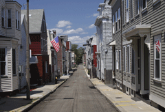

- Title Page
- Introducción
- Boston Globe— una breve historia
- Baron: Un nuevo rostro
- Nace una investigación
- El Equipo Spotlight
- El escenario nacional
- La “ciudad más católica”
- El Cardenal Law
- El Diario y el Cardenal
- El Globe y los católicos de Boston
- El caso del padre Geoghan
- Comenzar a escarbar
- Organizar los archivos
- Crece la base de datos
- Cuando la historia se torna personal
- Reportear tu cultura
- Potencial reacción
- Rezendes recibe una pista
- ¿Publicar o hacer una pausa?
Baron: Un nuevo rostro
Baron representó un cambio importante para el Globe. Los dos editores anteriores habían sido católicos irlandeses; Baron era judío, hijo de inmigrantes israelíes. Todos los editores anteriores en la historia del Globe habían surgido desde dentro del diario; Baron había sido editor ejecutivo del Miami Herald y, antes, editor general asociado del New York Times. Era nuevo no sólo para el Globe, sino para Boston. La reputación de insularidad y provincialismo que tenía Boston tal vez era exagerada, pero no venía de la nada. Comentando la contratación de Baron, un veterano del Globe se quejó de que Baron no sabía nada de Boston, sugiriendo que “no sabría encontrar la calle Boylston”.[5]

Una calle en el sur de Boston.
Cortesía iStockphoto
Aunque los periodistas del Globe podían objetar la contratación de una persona externa – “un hombre del Times”, más encima – no podían decir que Baron no estaba cualificado. La revista Editor and Publisher recién lo había nombrado Editor del Año por su trabajo en Miami Herald, que había atraído la atención nacional por su cobertura de la elección presidencial de 2000 y ganado un Premio Pulitzer en 2001 por su cobertura del caso del niño de seis años Elián González, quien había sido objeto de una disputa sobre custodia que involucró a los gobiernos de Cuba y Estados Unidos.
Una pregunta. A las 10:30 de la mañana del 30 de julio de 2001, Baron entró a su primera reunión como máximo editor del Globe. Había asumido el cargo esa misma mañana. En su mente estaban, entre otras cosas, una columna publicada en el Globe el día anterior. Esa columna, escrita por Eileen McNamara, era sobre John Geoghan, un sacerdote católico romano retirado quien presuntamente había abusado sexualmente a más de 100 niños. Una de las tantas demandas civiles en contra de Geoghan había sido presentada por 25 personas que afirmaban haber sido violadas entre 1985 y 1993. El Cardenal Law – quien había trasladado a Geoghan a las parroquias donde los presuntos crímenes se cometieron – era uno de los acusados en la demanda.
La demanda aún no llegaba a juicio, pero los abogados ya habían comenzado a presentar sus escritos ante la corte. En su columna, McNamara mencionó que esos documentos estaban sellados, fuera del alcance público. Baron venía de Florida, que tiene una expansiva ley de acceso a documentos públicos; como editor del Herald, no había dudado en presentar demandas por acceso a documentación. En la reunión del 30 de julio, Baron preguntó si alguien había considerado cuestionar la orden de confidencialidad de la corte. Sólo hubo silencio de respuesta. No era una idea revolucionaria, sino una que no se le había ocurrido a nadie más. “La gente aquí supuso que porque había una orden de confidencialidad, no había otra manera de tener acceso a esos documentos,” dice Baron.[6] Él venía con otras ideas.